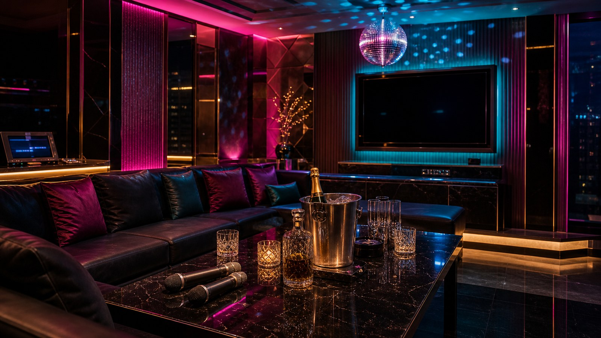

Recommend
台北男模店推薦看什麼？
先確認這次是閨蜜局、慶生、下班放鬆還是想唱歌聊天。男模店不只看熱鬧程度，也要看規則是否清楚、互動是否舒服、費用是否能事先說明。
台北男模店推薦指南
台北男模店適合女生聚會、閨蜜慶生、下班放鬆與多人派對。安排前先說清楚人數、預算、想要熱鬧帶氣氛或輕鬆聊天、是否需要慶生包廂，俞右會依當天店況協助確認包廂、看台方式與男模會館消費項目。
Recommend
先確認這次是閨蜜局、慶生、下班放鬆還是想唱歌聊天。男模店不只看熱鬧程度，也要看規則是否清楚、互動是否舒服、費用是否能事先說明。
Cost
常見費用包含包廂、人頭、男模檯費、少爺費、酒水、服務費與加時。人數越多越需要先確認包廂大小和基本時間。
Party
若是生日或多人派對，可以先說明人數、是否需要蛋糕、想要熱鬧帶氣氛或偏輕鬆聊天，安排會更貼近同行期待。
Rules
第一次去建議先問看台流程、互動界線、加時方式與結帳規則。現場核對清楚，比臨時詢問更不容易有落差。
台北男模會館常見內容包含 KTV、聊天、唱歌、遊戲、慶生、派對氣氛帶動與主題包廂。互動方式以合法社交娛樂、聊天陪伴與派對氛圍為主，適合想放鬆但也希望有人帶動節奏的聚會。
預約台北男模店前，建議先說明日期、時間、人數、預算、想要的氣氛與是否有慶生需求。費用部分要把基本時間、男模檯費、包廂費、酒水和加時分開問清楚。
Media
照片以派對燈光、KTV 桌面與包廂座位為主，可以先看空間大小、座位距離和慶生氣氛，再決定要安排輕鬆聊天或熱鬧派對。



搜尋台北男模店推薦時，地點不一定只看距離，也要看同行集合是否方便、包廂大小是否合適、回程交通是否好安排。若是女生聚會或生日局，建議把抵達時間、蛋糕或驚喜需求、是否需要安靜聊天一起說明，幹部比較能協助排出合適方案。
男模會館消費會依人數、包廂、基本時間、男模人數、酒水方案與是否加時而不同。想控制預算，可以先試算，再把看台方式、酒水和服務費分開確認。
| 包廂與人數 | 包廂大小、人數與座位安排會影響包廂費、人頭費與基本消費。 |
|---|---|
| 男模檯費 | 確認男模檯費、看台方式、是否能指定，以及基本時間如何計算。 |
| 少爺費與服務費 | 少爺費、服務費與桌面費可能分開計算，預約前建議先問清楚。 |
| 酒水方案 | 酒水、餐點、蛋糕或慶生需求會影響總額，適合先依人數估算。 |
| 加時與刷卡 | 若現場想延長時間，需先確認加時算法、刷卡費與結帳方式。 |
FAQ
以下整理搜尋台北男模店、男模會館推薦、男模店消費與女生聚會時最常問的問題。
建議先看同行人數、預算、想要熱鬧或輕鬆聊天、是否有慶生需求，以及店家地點和包廂大小是否適合。第一次安排可以先從消費項目和看台方式開始確認。
預約前建議確認包廂費、人頭費、男模檯費、少爺費、基本時間、酒水方案、加時、服務費、刷卡費與是否有低消。
男模店常見於女生聚會、閨蜜慶生、下班放鬆、唱歌聊天與多人派對。若同行有人第一次去，建議先選規則講得清楚、氣氛好掌握的店家。
建議先確認預算、互動界線、看台流程、酒水方案與結帳方式。入場後先核對消費規則，再開始唱歌、聊天、遊戲或慶生活動。
Stores
以下整理台北男模會館與男模店資料，包含中山區、民生東路、錦州街等常見地點。實際營業狀態、可預約時段與消費規則請先聯絡確認。

M男模會館適合女生聚會、生日、慶祝與想要輕鬆派對氣氛的客人。安排時建議先確認基本時間、看台方式與酒水方案。

YES男模會館屬多元客群友善的男模會館，適合閨蜜局、女生聚會與輕鬆聊天唱歌。預約前可先說明喜歡的互動風格。

502男模會館是台北常見男模店名單之一，適合慶生、派對與多人聚會。建議先確認人數、時段、男模人數與包廂需求。
Reservation
提供台北男模店推薦、台北男模會館、女生聚會、閨蜜慶生與派對包廂預約諮詢。請先提供日期、時間、人數、預算與想要的聚會氣氛。